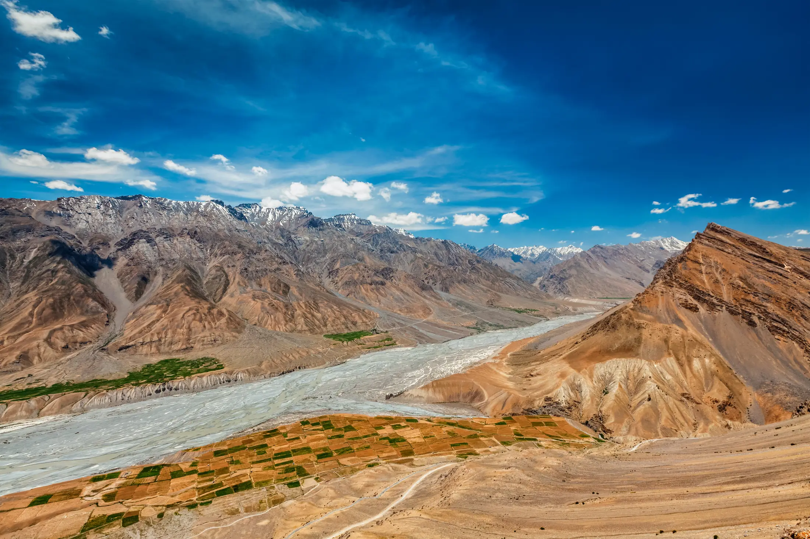
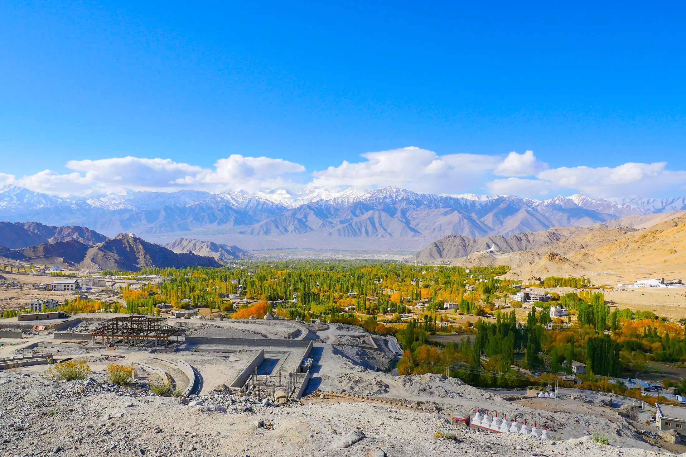

- Headache plus nausea, tiredness or dizziness at altitude is probably mild altitude sickness. Stop going up, rest, drink water and tell your leader.
- Prevent it by climbing slowly: above 3,000 m, raise your sleeping altitude by no more than about 500 m a day and rest every 3 to 4 days.
- Symptoms that worsen, confusion, loss of balance or breathlessness at rest are emergencies: descend and get medical help.
Altitude sickness is a headache with nausea, tiredness or dizziness that appears after you go up too fast. On a trek, the answer is to stop climbing, rest and tell your leader, and to go down if symptoms get worse. This is general information, not medical advice.
What are the symptoms?
The NHS says symptoms usually start 6 to 10 hours after reaching high altitude, generally above 2,500 m. The main signs are headache, loss of appetite, nausea or vomiting, tiredness, dizziness and trouble sleeping. The CDC calls headache the main symptom of acute mountain sickness (AMS) and says it often feels like a hangover, usually starting 2 to 12 hours after you gain height, often on the first night.
Two rarer forms are serious. In high-altitude cerebral oedema (HACE), the brain swells; the signs are confusion, loss of coordination and drowsiness. In high-altitude pulmonary oedema (HAPE), fluid collects in the lungs; early signs are a cough, chest congestion and unusual breathlessness on effort, then breathlessness at rest and sometimes frothy or bloody spit. Both can follow ordinary AMS.

How do you prevent it?
The key is ascent rate, and especially where you sleep. The CDC Yellow Book advises avoiding going from below 1,200 m straight to a sleeping altitude of 2,750 m or more in one day. Above 3,000 m, it says to raise your sleeping altitude by no more than about 500 m a day and to add a rest day for every 1,000 m gained. The NHS gives the same 500 m limit and suggests a rest day at the same height every 3 to 4 days once you are at 3,000 m or above. A summary of the Wilderness Medical Society's guidelines in American Family Physician also stresses that sleeping altitude matters more than how high you climb during the day.
- Go up slowly, and choose an itinerary with gentle steps. Our altitude gain guide shows how to read them.
- Drink enough water. The NHS advises avoiding dehydration; the National Park Service notes that fluids do not directly prevent altitude illness but stop dehydration from mimicking its symptoms.
- Skip alcohol while travelling or climbing, as the NHS advises.
- Avoid flying straight to altitude. If you must, the NHS says to rest for a day before going higher.
- Talk to a doctor if you have had altitude sickness before or are ascending fast. Both the NHS and CDC say a doctor can discuss preventive medicine; we give no doses.
Being fit helps you walk, but the CDC's guidance is built around how fast you ascend, so build the plan around days, not stamina. Our fitness plan covers the walking.
What should you do if you feel unwell?
- Tell someone. Tell your trek leader and companions as soon as you feel off. There is no prize for hiding it.
- Stop going up. Rest at the same altitude. The NHS says mild symptoms usually improve within 1 to 3 days, and the CDC says AMS typically settles within 12 to 48 hours if you do not ascend further.
- Treat the symptoms. The NHS says anti-sickness medicine or painkillers such as paracetamol or ibuprofen can ease symptoms. Check with your leader or a doctor first.
- Do not sleep higher while symptomatic. The CDC is explicit: never ascend to sleep at a higher altitude when you have symptoms of altitude illness.

When should you descend?
Go down if symptoms worsen despite rest, or do not improve after a day; the NHS advises descending about 300 to 1,000 m if you can. The American Family Physician summary of WMS guidance says to descend until symptoms resolve, typically 300 to 1,000 m.
Treat these as emergencies, according to the NHS: confusion, problems with balance or coordination, hallucinations, breathlessness at rest, a cough with frothy or bloody spit, blue or grey lips or nails, and extreme sleepiness or difficulty waking. Descend straight away, ideally with help, and get medical care. CDC says descent is urgent for suspected HAPE and should begin right away for suspected HACE in remote areas.
What does this mean on Indian treks?
Most popular winter treks have at least one night above 3,000 m. On Kedarkantha, the first such night is at Base Camp (3,413 m) on day 3, which is also the night to go slowly, eat and drink well and watch how you feel. Operators carry first-aid kits, and some list oximeters, oxygen cylinders and stretchers; Bikat's Kedarkantha page lists an oximeter and oxygen cylinder, and Himalayan Dream Treks lists oxygen cylinders and stretchers. Rescue is usually not part of the trek fee, so consider travel insurance that covers evacuation. The Kedarkantha and Dayara Bugyal pages show where each night's sleeping height falls; for Ladakh routes such as Markha, plan your arrival in Leh with a rest day.
If you are unsure which trek suits you, choose a gentler one first. Our easy treks guide is a good place to start.
Who should see a doctor first?
The CDC advises people with conditions such as coronary artery disease, chronic lung disease, sleep apnoea or sickle cell trait to speak with a doctor who knows high-altitude medicine, even if the condition is well controlled. Pregnant travellers should confirm good health and a low-risk pregnancy and avoid sleeping above about 3,050 m. People with diabetes should monitor blood glucose closely. Talk to a doctor before any high trek if you are unsure.
General information for planning, not medical advice or a diagnosis. In an emergency, descend and get help.
Sources
- NHS: Altitude sickness
- CDC Yellow Book: High-altitude travel and altitude illness
- American Family Physician: Acute altitude illness, updated Wilderness Medical Society guidelines
- US National Park Service (Denali): Mountaineering medical issues
- Bikat Adventures: Kedarkantha
- Himalayan Dream Treks: Brahmatal (inclusions)
Quick questions
What are the first signs of altitude sickness?
A headache, usually with loss of appetite, nausea, tiredness, dizziness or poor sleep. The NHS says symptoms usually start 6 to 10 hours after reaching a new height, generally above 2,500 m.
How do I prevent altitude sickness on a trek?
Go up slowly, sleep no more than about 500 m higher each night once above 3,000 m, take a rest day every 3 to 4 days, drink enough water and avoid alcohol. Ask a doctor about preventive medicine before you go.
Should I go down if I feel sick?
Stop climbing and rest at the same height. If symptoms get worse or do not improve after a day, the NHS advises descending 300 to 1,000 m, and CDC says never to ascend to sleep while you have symptoms.
Can I trek at altitude with a health condition?
Talk to a doctor before you go. The CDC lists conditions such as heart disease, chronic lung disease and sleep apnoea that call for advice from a doctor who knows high-altitude medicine.